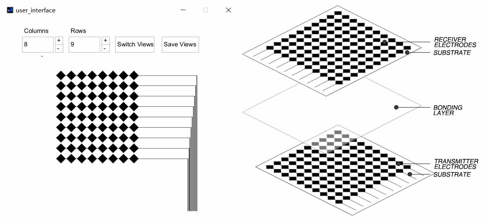
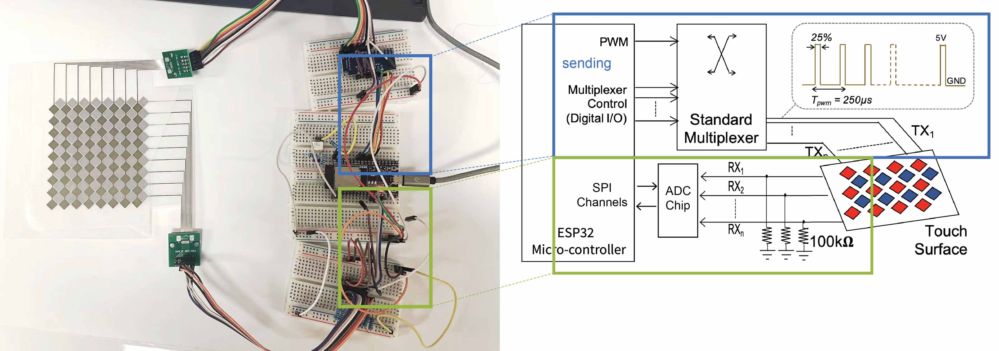
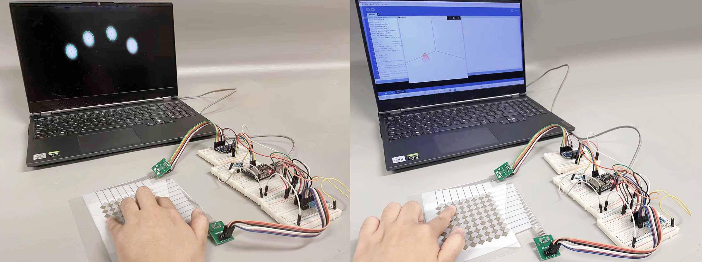
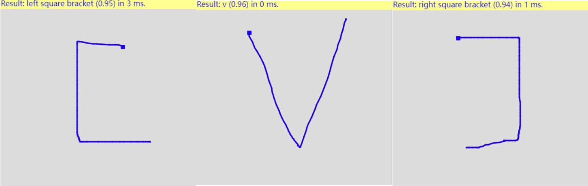

Inkjet Printed Multi-Touch Pad With Gesture Recognition
The project built an inkjet printed multi-touch pad that draw touch signals into an image and extract the touch points via computer vision. Finally, the program implemented a gesture recognizer that can differentiate between different user inputs.
USER INTERFACE FOR PAD FABRICATION
I created a Processing program that automatically generates and saves the fabrication files
for the two layers of a multi-touch pad. Users are allowed to adjust and switch number of electrodes on X and Y Axis.
CIRCUIT
The circuit is built up with receiving circuit and sending circuit. Components used in the electronic design includes:
EPS32(microcontroller), Standard Multiplexer, ADC chip, and 100kohm resistors.
SENSING
The system detects single and multiple fingers and visualize it in 2D and 3D interface.
The height of the touch point in 3D view represents how much pressure is applied.
GESTURE RECOGNIZER
Training data for Gesture Right-bracket, Left-bracket, and V is captured and learned,
which allows blobs input be detected and recognized. Watch Video for a detailed looking.